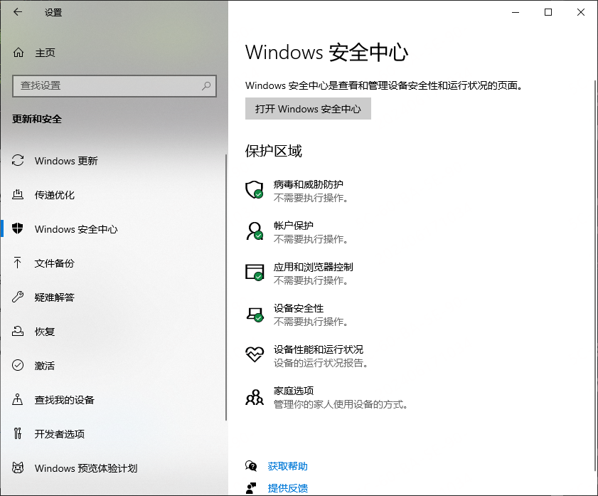
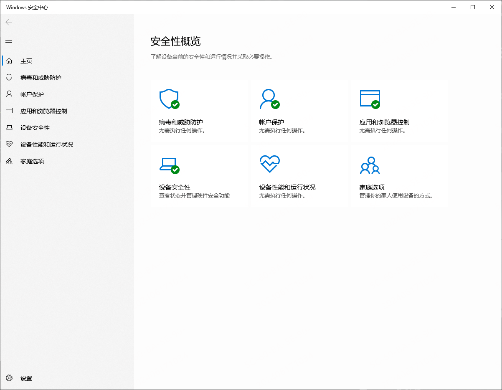

概述：Windows MSMPEng 你可能不太熟悉，但是 Windows Defender 你肯定见过或是用过。本文就 Windows Defender 的相关内容进行整理记录。
相关推荐：
文章结构：
[toc]
0x01 Windows Defender 是什么
Windows Defender 是一款内置在 Windows 操作系统的防病毒软件程序。微软官方同时提供了商业版版本。在其描述中提到其结合了机器学习、大数据分析、深度威胁抵御研究和 Microsoft 云技术结构等技术。
0x02 Defender 防病毒过程和服务
| 进程或服务 | 查看其状态的位置 |
|---|---|
Microsoft Defender 防病毒核心服务 (MdCoreSvc) | - “进程”选项卡：Antimalware Core Service - “详细信息 ”选项卡： MpDefenderCoreService.exe - “服务”选项卡：Microsoft Defender Core Service |
Microsoft Defender 防病毒服务 (WinDefend) | - “进程”选项卡：Antimalware Service Executable - “详细信息 ”选项卡： MsMpEng.exe - “服务”选项卡：Microsoft Defender Antivirus |
Microsoft Defender 防病毒网络实时检查服务 (WdNisSvc) | - “进程”选项卡：Microsoft Network Realtime Inspection Service - “详细信息 ”选项卡： NisSrv.exe - “服务”选项卡：Microsoft Defender Antivirus Network Inspection Service |
| Microsoft Defender 防病毒命令行实用工具 | - “进程”选项卡：“不适用” - “详细信息 ”选项卡： MpCmdRun.exe - “服务”选项卡：“不适用” |
| Microsoft 安全客户端策略配置工具 | - “进程”选项卡：“不适用” - “详细信息 ”选项卡： ConfigSecurityPolicy.exe - “服务”选项卡：“不适用” |
若要了解有关 Microsoft Defender Core 服务的详细信息，请访问 Microsoft Defender Core 服务概述。
对于 Microsoft Endpoint 数据丢失防护 (Endpoint DLP) ，下表汇总了进程和服务。 可以在 Windows 的任务管理器中查看它们。
| 进程或服务 | 查看其状态的位置 |
|---|---|
Microsoft Endpoint DLP 服务 (MDDlpSvc) | - “进程”选项卡：MpDlpService.exe - “详细信息 ”选项卡： MpDlpService.exe - “服务”选项卡：Microsoft Data Loss Prevention Service |
| Microsoft Endpoint DLP 命令行实用工具 | - “进程”选项卡：“不适用” - “详细信息 ”选项卡： MpDlpCmd.exe - “服务”选项卡：“不适用” |
比较主动模式、被动模式和已禁用模式
下表介绍了 Microsoft Defender 防病毒处于主动模式、被动模式或已禁用模式下应发生的情况。
展开表
| 模式 | 发生的情况 |
|---|---|
| 主动模式 | 在主动模式下，Microsoft Defender 防病毒用作设备上的主防病毒应用。 将扫描文件，修正威胁，并将检测到的威胁列在组织的安全报告中和 Windows 安全中心应用中。 |
| 被动模式 | 在被动模式下，不将 Microsoft Defender 防病毒用作设备上的主防病毒应用。 将扫描文件，并报告检测到的威胁，但 Microsoft Defender 防病毒不会修正威胁。 重要： Microsoft Defender 防病毒只能在载入到 Microsoft Defender for Endpoint 的终结点上以被动模式运行。 请参阅 在被动模式中运行Microsoft Defender 防病毒的要求。 |
| 已禁用或卸载 | 在已禁用或卸载时，不使用 Microsoft Defender 防病毒。 不会扫描文件，并且不会修正威胁。 通常，我们不建议禁用或卸载 Microsoft Defender 防病毒。 |
要了解详细信息，请参阅 Microsoft Defender 防病毒。
0x3 查看 Defender 内容
查看 Defender 状态
使用 Windows 安全中心应用检查 Microsoft Defender 防病毒软件状态
- 在 Windows 设备上，选择“开始”菜单，然后开始键入
Security。 然后在结果中打开 Windows 安全中心应用。 - 选择“病毒和威胁防护”。
- 在“谁在保护我？”下，选择“管理提供程序”。
安全提供程序页面上将显示防病毒/反恶意软件解决方案的名称。


使用 PowerShell 检查 Microsoft Defender 防病毒软件状态
- 选择“开始”菜单，然后开始键入
PowerShell。 然后在结果中打开 Windows PowerShell。 - 类型
Get-MpComputerStatus。 - 在结果列表中，查看 AMRunningMode 行。
- 正常 表示 Microsoft Defender 防病毒在主动模式下运行。
- 被动模式 表示 Microsoft Defender 防病毒正在运行，但不是设备上的主要防病毒/反恶意软件产品。 被动模式仅适用于已载入 Microsoft Defender for Endpoint 且满足特定要求的设备。 若要了解详细信息，请参阅 Microsoft Defender 防病毒在被动模式运行的要求。
- EDR 阻止模式 意味着Microsoft Defender 防病毒正在运行，并且在阻止模式下 终结点检测和响应 （EDR），（Microsoft Defender for Endpoint 中的功能）已启用。 检查 ForceDefenderPassiveMode 注册表项。 如果其值为 0，则表示它在正常模式下运行;否则，它将在被动模式下运行。
- SxS 被动模式 意味着 Microsoft Defender 防病毒与另一个防病毒/反恶意软件产品一起运行，并且 使用有限的定期扫描。
使用 CMD 命令行查看
dir "C:\ProgramData\Microsoft\Windows Defender\Platform\" /od /ad /b
----
4.18.23090.2008-0
4.18.24030.9-0
4.18.24040.4-0
4.18.24050.7-0数字大的为最新版本。
查看已存在的查杀排除列表
通过面板查看
通过命令行查看
reg query "HKLM\SOFTWARE\Microsoft\Windows Defender\Exclusions" /s通过 Powershell 查看
Get-MpPreference | select ExclusionPath0x04 关闭 Windows Defender 的 Real-time Protection
通过面板关闭
依次选择Windows Security->Virus & theat protection settings，关闭Real-time protection
通过命令行关闭
利用条件：
- 需要 TRustedInstaller 权限
- 需要关闭 Tamer Protection
reg add "HKEY_LOCAL_MACHINE\SOFTWARE\Microsoft\Windows Defender\Real-Time Protection" /v "DisableRealtimeMonitoring" /d 1 /t REG_DWORD /f运行成功情况下，系统弹窗会提示 Windows Defender 已关闭
💡补充：
开启 Windows Defender 的 Real-time protection
利用条件：同关闭时利用条件
reg delete "HKEY_LOCAL_MACHINE\SOFTWARE\Microsoft\Windows Defender\Real-Time Protection" /v "DisableRealtimeMonitoring" /f💡补充2：如果获取 TrustedInstaller 权限
可以使用 TokenVator 将 system 权限提升至 TrustedInstaller 权限
也可以参考这篇文章
或者使用 AdvancedRun，命令示例：
AdvancedRun.exe /EXEFilename "%windir%\system32\cmd.exe" /CommandLine '/c reg add "HKEY_LOCAL_MACHINE\SOFTWARE\Microsoft\Windows Defender\Real-Time Protection" /v "DisableRealtimeMonitoring" /d 1 /t REG_DWORD /f' /[[【CMD】runas|runas]] 8 /Run💡补充3： Tamper Protection
参考资料：
当开启 Tamper Protection 时，用户将无法通过注册表、Powershell 和组策略修改 Windows Defender 的配置
- 开启 Tamper Protection的方法：
依次选择
Windows Security->Virus & theat protection settings，启用Tamper Protectionreg add "HKEY_LOCAL_MACHINE\SOFTWARE\Microsoft\Windows Defender\Features" /v "TamperProtection" /d 5 /t REG_DWORD /f
- 关闭 Tamper Protection 的方法
依次选择
Windows Security->Virus & theat protection settings，禁用Tamper Protectionreg add "HKEY_LOCAL_MACHINE\SOFTWARE\Microsoft\Windows Defender\Features" /v "TamperProtection" /d 4 /t REG_DWORD /f注意：无法通过修改注册表的方式去设置 Tamper Protection，只能通过面板去修改
- 查看 Tamper Protection 的状态
reg query "HKEY_LOCAL_MACHINE\SOFTWARE\Microsoft\Windows Defender\Features" /v "TamperProtection"返回结果说明：
5：开启；4：关闭
💡补充4：通过 Powershell 关闭 Windows Defender 的 Real-time protection
Set-MpPreferecve -DisableRealtimeMonitoring $true注：新版本的Windows已经不再适用
💡补充5： 通过组策略关闭 Windows Defender 的Real-time protection
依次打开
gpedit.msc->Computer Configuration->Administrative Templates->Windows Components->Microsoft Defender Antivirus->Real-time Protection，选择Turn off real-time protection，配置成Enable注：新版本的Windows已经不再适用
0x05 添加查杀排除列表
通过面板添加
依次选择Windows Security->Virus & theat protection settings->Add or remove exclusions，选择Add an exclusion，指定类型
该操作等价于修改注册表HKLM\SOFTWARE\Microsoft\Windows Defender\Exclusions\的键值，具体位置如下：
- 类型File对应注册表项Paths
- 类型Folder对应注册表项Paths
- 类型File type对应注册表项Extensions
- 类型Process对应注册表项Processes
通过命令行添加
利用条件：
- 需要TrustedInstaller权限
cmd命令示例：
reg add "HKEY_LOCAL_MACHINE\SOFTWARE\Microsoft\Windows Defender\Exclusions\Paths" /v "c:\test" /d 0 /t REG_DWORD /f3.通过Powershell添加
利用条件：
- 需要管理员权限
参考资料：
Powershell命令示例：
Add-MpPreference -ExclusionPath "C:\test"补充：删除排除列表
Remove-MpPreference -ExclusionPath "C:\test"0x06 移除 Token 导致 Windows Defender 失效
学习地址：
简单理解：
- Windows Defender进程为MsMpEng.exe
- MsMpEng.exe是一个受保护的进程(Protected Process Light，简写为PPL)
- 非PPL进程无法获取PPL进程的句柄，导致我们无法直接结束PPL进程MsMpEng.exe
- 但是我们能够以SYSTEM权限运行的线程修改进程MsMpEng.exe的token
- 当我们移除进程MsMpEng.exe的所有token后，进程MsMpEng.exe无法访问其他进程的资源，也就无法检测其他进程是否有害，最终导致Windows Defender失效
POC地址：https://github.com/pwn1sher/KillDefender
利用条件：
- 需要System权限
0x07 恢复被隔离的文件
参考资料：
1.定位MpCmdRun
dir "C:\ProgramData\Microsoft\Windows Defender\Platform\" /od /ad /b得到<antimalware platform version>
MpCmdRun的位置为：C:\ProgramData\Microsoft\Windows Defender\Platform\<antimalware platform version>
2.常用命令
查看被隔离的文件列表：
MpCmdRun -Restore -ListAll恢复指定名称的文件至原目录：
MpCmdRun -Restore -FilePath C:\test\mimikatz_trunk.zip恢复所有文件至原目录：
MpCmdRun -Restore -All查看指定路径是否位于排除列表中：
MpCmdRun -CheckExclusion -path C:\test补充，如果你的 Windows 上安装了别的安全软件，则会出现 Windows Defender 未启动的情况，这时候再运行
MpCmdRun是无效的，会报错0x800106ba。
0x08 防御建议
阻止通过命令行关闭Windows Defender：开启Tamper Protection
阻止通过移除Token导致Windows Defender失效：阻止非PPL进程修改PPL进程MsMpEng.exe的token，工具可参考：https://github.com/elastic/PPLGuard
0x09 小结
了解 Defender，如何使用，并通过相关可以操作的行为去避免其失效的情况。最重要的是一定要尝试。